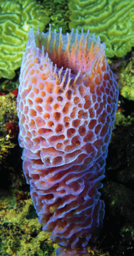
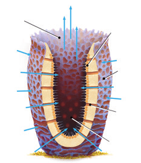
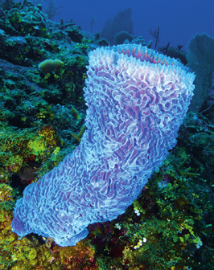
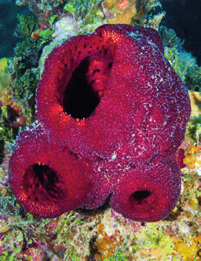

Conocidos también con el nombre de esponjas, los poríferos son invertebrados acuáticos que, al no tener aspecto de animales, fueron considerados como plantas durante mucho tiempo.
Estos animales no se desplazan, sino que viven fijos al sustrato, desde aguas someras hasta aguas profundas. Algunas especies son de agua dulce, pero la mayoría son marinas.
El cuerpo de los poríferos
Son animales irregulares, es decir, carecen de simetría, aunque algunos tienen simetría radial. El esqueleto de las esponjas está formado por espongina (una proteína elástica) y espículas de carbonato de calcio o de sílice.
Su cuerpo está atravesado por pequeños poros.
Los poros se comunican entre sí por canales y cámaras que confluyen en una cavidad central o atrio.
El atrio se abre al exterior por un poro de mayor tamaño, denominado ósculo.
Las funciones vitales de los poríferos
Las esponjas respiran por difusión a través de las membranas de sus células y se alimentan por filtración. El movimiento de las células flageladas que tapizan las cavidades del cuerpo de las esponjas provoca la entrada de agua por los poros y su salida por el ósculo. Esta corriente de agua proporciona partículas de alimento y oxígeno al animal.
La reproducción puede ser asexual y sexual. La reproducción asexual se realiza por gemación, proceso por el cual a la esponja le sale una yema que se separa y origina un nuevo individuo. Cuando la reproducción es sexual, la mayoría de las esponjas pueden generar tanto espermatozoides como óvulos.
Los poríferos carecen de sistema nervioso y de órganos de los sentidos.

Esponja marina colorida

Corte transversal de un pólipo de coralForma geométrica

Estructura de arrecife de coral

Esponja de mar roja